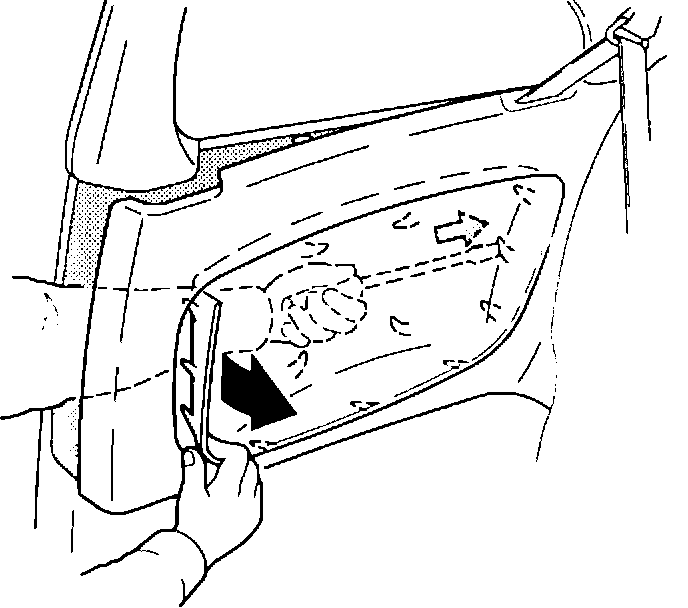

Rear Quarter Trim Panel - Loose Fabric
BULLETIN NO:92-035
YEAR
1990-91
MODEL
INTEGRA 3-DOOR
VIN APPLICATION
ALL
November 3, 1992
Loose Fabric on Rear Quarter Trim Panel
PROBLEM
The fabric on the rear quarter trim panel center pad is loose.
CORRECTIVE ACTION
Replace the center pad.
1. Remove the rear seat cushion.

2. Remove the lower mounting screw from the quarter trim panel, then release the panel from the B-pillar.
3. Pull the quarter trim panel away from the body until you can access the center pad tabs.
4. Bend up the metal tabs and remove the center
5. Install the new center pad (see PARTS INFORMATION).
6. Reinstall the quarter trim panel and the seat cushion.
PARTS INFORMATION
Refer to Parts Information Bulletin B92-0031, "Rear Quarter Trim Panel Center Pad," dated September 15, 1992, filed under New Parts.
WARRANTY CLAIM INFORMATION
In warranty:
The normal warranty applies.
Out of warranty:
Any repair performed after warranty expiration may be eligible or goodwill consideration by the District Service Manager. You must request consideration, and get the DSM's decision, before starting work.
Operation number: 857130
Flat rate time: 0.3 hour
Failed P/N: 83780-SK7-A01ZA
Defect code: 061
Contention code: A02